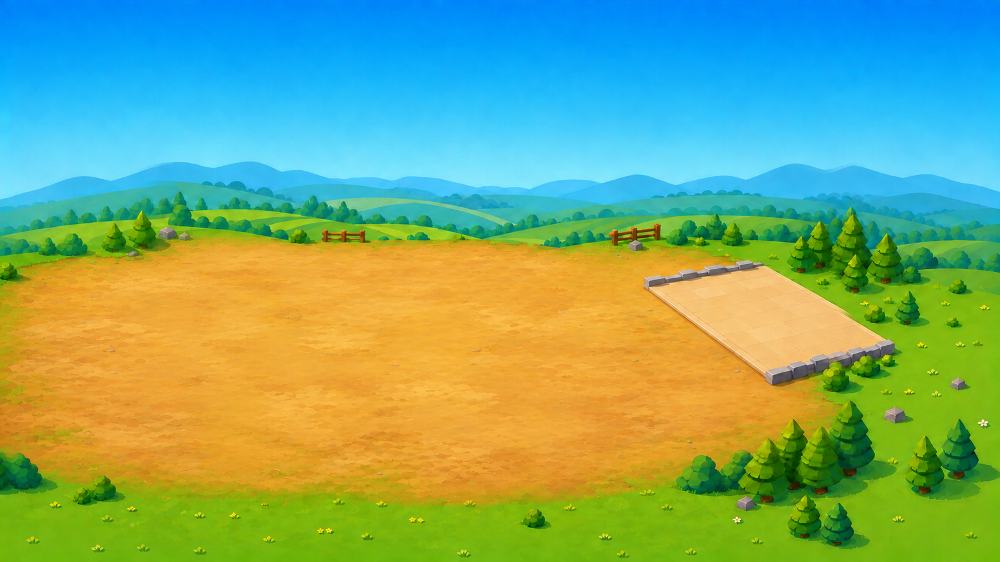

Hold the common.
Recruit soldiers, archers, knights, and mages to meet increasingly unruly waves. Every survivor has an upkeep bill.
CASTLE DEFENSE · ECONOMIC MISCHIEF
Raise an army. Weather the waves. Discover that goblins are only your second biggest problem when interest rates rise.
Free to play · No account · An evolving work in progress

KEEP THE CASTLE.Recruit soldiers, archers, knights, and mages to meet increasingly unruly waves. Every survivor has an upkeep bill.
Balance cash, bonds, and borrowing through rate hikes, inflation, and credit crunches. Tomorrow’s army needs today’s good decisions.
Become a Hero, Archmage, Warlord, or Tycoon. Four commitments. Four ways to see how long your kingdom can last.
FRESH FROM THE ROYAL WORKSHOP
Nightlies contain the latest development build and may have rough edges.
Checking the latest build…
Windows: extract the ZIP and run gilts-goblins.exe. macOS: extract the ZIP and open Gilts & Goblins.app; this preview is ad-hoc signed and has not been Apple notarized. Linux: make the AppImage executable, then launch it (Ubuntu 22.04 or newer recommended). Android: install the APK and play in landscape; this early build may need further device-specific polish.
Use the mouse or touch to interact. Space starts a wave from the shop; Esc pauses. Browser saves stay in this browser’s local storage and are removed if you clear site data. The browser version works best on a desktop with hardware acceleration.